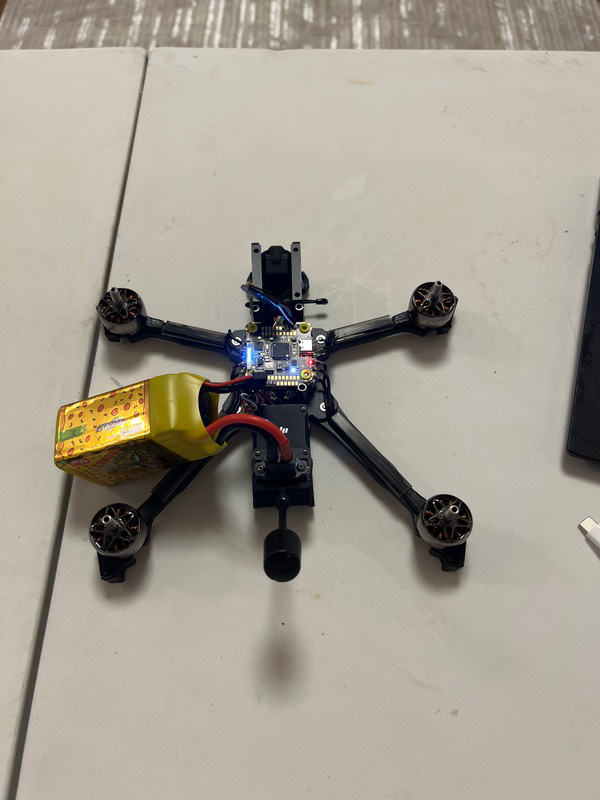

Designed, built, tuned, and flight-tested a custom FPV UAV racer focused on high-speed performance, durability, and hands-on systems integration. The platform reached about 70 mph and gave me practical experience across the full UAV build cycle.
Overview
Hummingbirb is a custom FPV racer built around a carbon-fiber frame and SpeedyBee F405 V4 flight stack. The project combined frame material selection, electronics integration, custom wiring, GPS-supported safety functionality, tuning, flight testing, and repeated repair.
Problem
The goal was to build a fast FPV drone that could handle repeated testing, crashes, and repairs while still supporting reliable flight behavior. The platform needed to balance speed, weight, durability, wiring quality, and safety features without becoming too difficult to maintain.
Approach
- Selected a carbon-fiber frame to improve strength-to-weight performance for high-speed FPV flight.
- Built the system around a SpeedyBee F405 V4 flight stack with GPS support for a return-to-home style safety feature.
- Completed custom wiring, system setup, tuning, troubleshooting, and repeated flight testing to improve reliability.
- Used crash damage, Blackbox-style tuning feedback, and repair cycles to iteratively improve the build.
Contribution
- Researched frame materials and selected a carbon-fiber chassis to balance durability, stiffness, and weight.
- Integrated the SpeedyBee F405 V4 stack, GPS-supported peripherals, custom wiring, and flight-control setup.
- Performed tuning, troubleshooting, repairs, and repeated flight tests to push the platform toward stable high-speed performance.

Outcome
- Completed a fully built and flight-tested FPV racer capable of reaching about 70 mph.
- Integrated a SpeedyBee F405 V4 stack with GPS-supported safety features and multiple UART-connected peripherals.
- Strengthened practical skills in custom wiring, SolidWorks modeling, system setup, tuning, and flight testing.
- Developed faster troubleshooting and repair habits through repeated crash, rebuild, and tuning cycles.
What I Learned
- Small wiring and mounting decisions can strongly affect reliability, maintenance time, and flight-test confidence.
- High-speed UAV testing requires a balance between performance, safety features, and repairability.
- Repeated crash repair is part of the design loop because it exposes weak points that static inspection can miss.